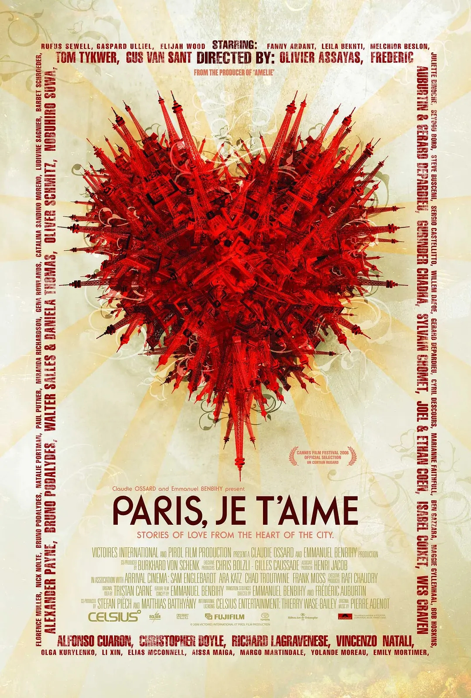
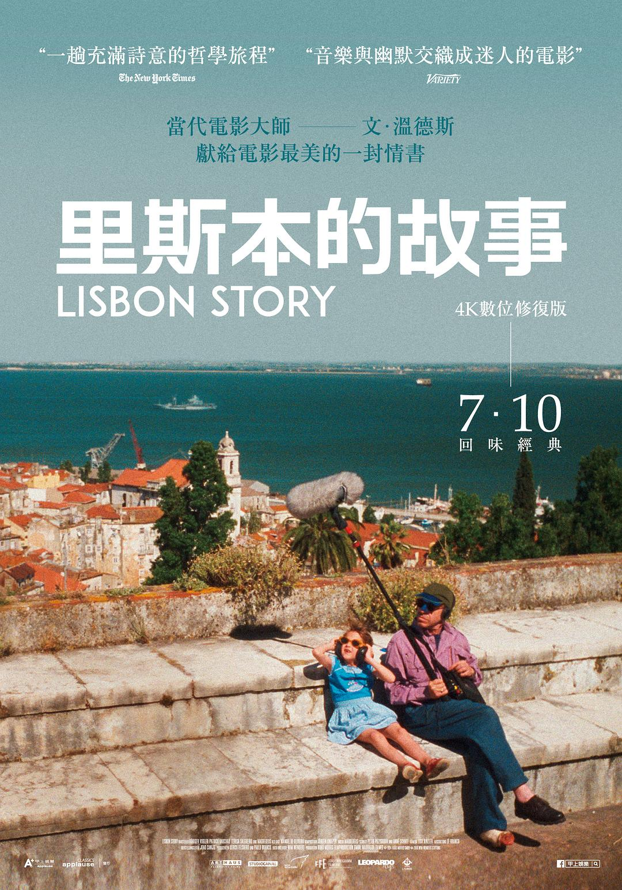
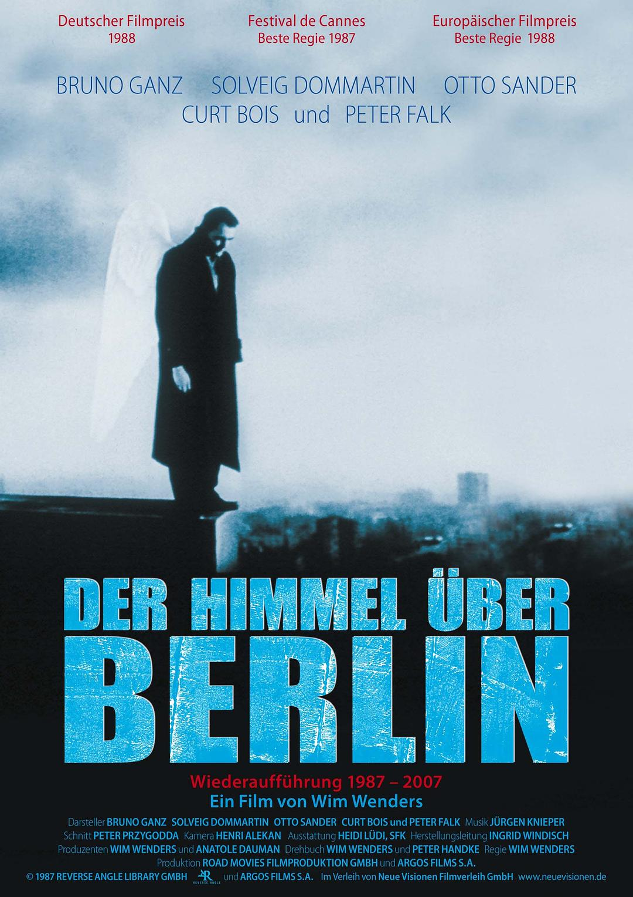

<html>
<head>
<style type="text/css">
p {text-indent:2.17cm}
div {  
  margin: 0 auto;  
  text-align: center;  
  font-size: 40px;  
  color:white
}

</head>


<map name="image-map">
    <area target="" alt="" title="" href="#1" coords="1613,2382,1671,2433" shape="rect">
    <area target="" alt="" title="" href="#2" coords="1094,2960,1145,3041" shape="rect">
    <area target="" alt="" title="" href="#3" coords="729,2970,773,3029" shape="rect">
    <area target="" alt="" title="" href="#4" coords="2219,2181,2270,2254" shape="rect">
</map>
<body bgcolor="black">
<div>
<!-- Image Map Generated by http://www.image-map.net/ -->
<br><br><br><br><br><br><br><br><br><br><br><br>


<br><br>
<!--巴黎-->
<p align="center"><p><small><a href="#5" align="center">Back to top</a></small></p>
	这是2006年戛纳电影节的开幕影片，众多著名导演参加了这部包含有十多个小故事的影片，其中包括科恩兄弟、杜可风等等。制片人希望通过这部众多导演参与的影片讲述发生在巴黎的几乎所有的情感。片中的十多个小故事有的看似荒诞不经、有的看似毫无头绪，但是细细品味，你会发现其中 每个导演想表达的“真理”。
一个还算小有成就的中年男友，在路边停车时，突发感概，为什么满街上的人，只有自己形单只影？就在这时，一个女人因为低血糖晕倒了在他的车旁，热心的男人将她扶进了自己的小车后座休息，两颗孤独的心由此靠近。
	塞纳河畔，三个年轻人在调戏着路过的年轻女子。其中一个发现了就在他们旁边有一个戴头巾的漂亮女孩，女孩离开时不小心摔倒了，那个年轻人跑过去把她扶了起来。爱情在两人中间慢慢滋长。
	一间画室里，一个法国男孩对另一个男孩一见钟情，絮絮叨叨的讲着自己是如何抑制不住和他谈话，讲着自己是如何被对方的气质所吸引……然而另一个男孩对他却无动于衷，最后，法国男孩留下了自己的联系方式离开了。这时，男孩用英语问旁人，“刚才他在讲什么？我法语不好。”随后，男孩冲出了画室，奔跑着去追寻自己的爱情。
……
　　一个美国中年妇女来到巴黎旅游，她望着川流不息的人群，此时她多么希望自己就是法国人，能长此居住在这个陌生而又极具魅力的城市。她想起了自己的前男友，虽然两人已经分手了十一年，他也有了自己的家庭。最后，他参观了巴黎的公墓，看到历史上叱咤风云的人物安静的躺在那里，她也感悟了。</p><br><br><br><br><br><br>
<br><br>
<!--马德里-->
<p align="center"><p><small><a href="#5" align="center">Back to top</a></small></p>
	Maca (María Valverde), 30 years old and clumsy by nature, makes the most of life and strives to be happy. Maca's talent is wasted working as an assistant for an oppressive and terrifying fashion influencer and she spends her time with guys with whom she never manages to establish an emotional bond. Together with Jimena (Elísabet Casanovas) and Adriana (Susana Abaitúa), her two unique and lovable friends who are always ready to do whatever it takes to make their problems not seem so bad, Maca has managed to make Madrid a city where everything is possible. Everything seems to be going well until he-who-must-not-be-named comes back into her life. Leo (Alex González), the love and biggest mistake of her life, the man who tore her heart apart, obliterated her self-esteem and her faith in men, comes back into her life to turn everything upside down. Maca has tried to forget him, but now she has to accept that he has returned and face the emotions she has locked away to deal with the unforgettable memory of what could have been and never was. Old wounds are reopened and Maca will have to be brave and confront her conflicts, fears and insecurities in order to finally take control of her life. </p><br><br><br><br><br><br>
	
<br><br>
<!--里斯本-->
<p align="center"><p><small><a href="#5" align="center">Back to top</a></small></p>
	此片可以看作是文德斯《事物的状态》的续集。前集中的导演弗里德里希（帕特里克·波查 Patrick Bauchau 饰）在本片中去里斯本拍摄素材，他邀请电影收音师菲利普（鲁迪格·福格勒 Rüdiger Vogler 饰）帮自己的默片收集声音。菲利浦接到邀请明信片之后，依约赶往里斯本，却找不到弗里德里希的踪迹，只发现他留下的一些神秘线索。根据导演留下的一段关于里斯本某个小镇的菲林，菲利普前去该地方收集声音。他穿越在大街小巷，记录下各种声音。在里斯本游荡期间，他结识一位电影插曲演唱女歌手，生活自此增添了些许情调。影片最后，他找到了弗里德里希，了解到导演离走的原因：面对商业影像的冲击，导演已经对影像感到麻木，无法再找到拍摄的灵感与激情，于是发明了一种盲拍手法，将摄影机架在肩上，自己随意走动，任凭镜头记录所到之处的影像，他认为这种记录才是忠实地记录一个地方，是客观和真实的。 </p><br><br><br><br><br><br>
	
<br><br>
<!--柏林-->
<p align="center"><p><small><a href="#5" align="center">Back to top</a></small></p>
	柏林由两位天使守护着，一个是对人世疾苦冷眼旁观的卡西尔，另一个是常常感怀于人类疾苦的丹密尔（布鲁诺•甘茨 Bruno Ganz 饰）。二人穿着宽大的天使袍，在城市各处游荡，倾听人们的祈祷，默默观察人们的内心世界。马戏团玛瑞安（苏韦戈•多马丁Solveig Dommartin 饰）的心事引来了丹密尔的同情，因为马戏团经营不善，面临倒闭，玛瑞安满心烦恼。这个马戏团的天使演员令丹密尔动了凡心，他决定化作凡人，追求一段美满感情。本片荣获1987年第40届戛纳国际电影节最佳导演奖。</p><br><br><br><br><br><br>
	


</style>
</body>
</html>